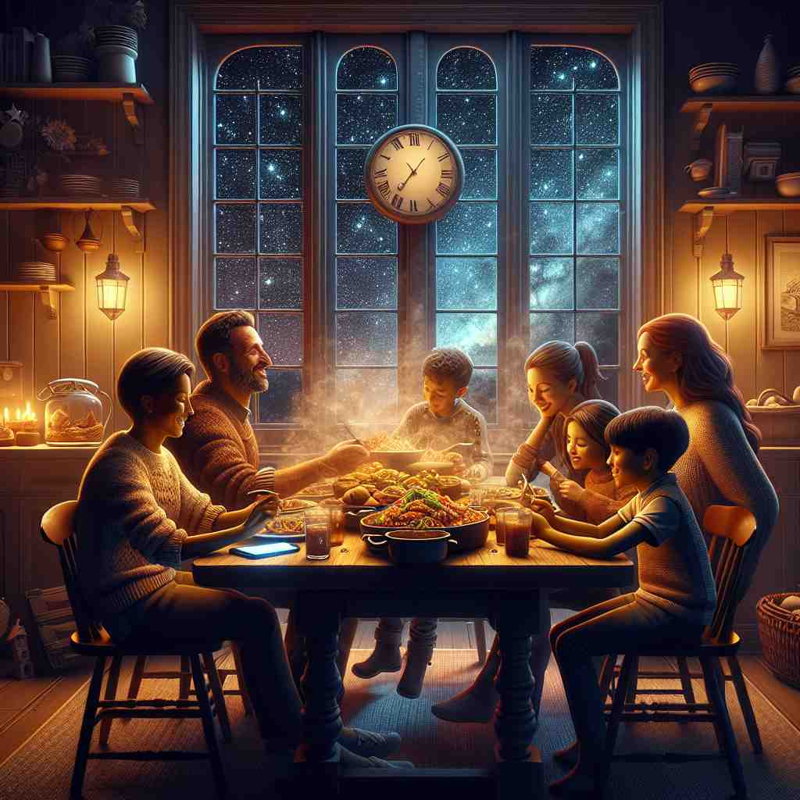

💬 We will have family time tonight around the dinner table. 我们今晚将在餐桌旁度过家庭时光。

💬 Let's enjoy the night tonight by the lake. 今晚让我们在湖边享受这个夜晚。
💬 We will have family time tonight around the dinner table. 我们今晚将在餐桌旁度过家庭时光。
💬 Let's enjoy the night tonight by the lake. 今晚让我们在湖边享受这个夜晚。
🔈 [tə'naɪt]
💬 We are going to the cinema tonight. 我们今晚要去电影院。
🔍 今晚: “今晚”指的是今天晚上，太阳下山后到明天太阳升起前的这段时间。比如，现在是下午，太阳还在天上，我们说“我们今晚要去电影院”，意思是说，等太阳下山后，天黑了，我们要去电影院。
💬 I will finish my homework tonight. 我今晚要完成我的家庭作业。
🔍 今晚: 你今天放学回家后，还有一项作业没有完成，你打算在今天晚上睡觉之前完成它。 就像你今天要画一幅画，但你还没画完，你打算在今天晚上睡觉前画完。
💬 There will be a big party tonight. 今晚会有一个盛大的派对。
🔍 今晚: 今天晚上，天黑之后，会有很多人聚在一起唱歌、跳舞、吃东西，这就是一个派对。就像你生日的时候，你的爸爸妈妈会邀请你的朋友们来你家，和你一起玩游戏、吃蛋糕，这也是一个派对。
🧠 “tonight” 的意思是“今天晚上”，指的是从今天太阳下山到明天太阳升起前的这段时间。
⬅️ this evening（今天傍晚）: “tonight” 和 “this evening” 都是指今天的晚上，但 “this evening” 更侧重指傍晚，也就是刚天黑的那段时间。
🔀 tomorrow night (明天晚上): “tonight” 指的是今天晚上，“tomorrow night” 指的是明天晚上。 今天晚上过了就是明天，明天晚上过了就是后天。
🌳 由词根 "ton-"（源自古英语，意为 '今晚的' 或 '当天晚上'）和词 "night"（夜晚）组合而成，表示今晚。
💡 记忆 "tonight" 时，可将其联想为 "today's night"（今天的夜晚），这样便能更直观地理解为今晚，结合今天和夜晚两个词的概念，帮助记忆。
🗝️ adv. during the evening or night of today 今天晚上或夜间期间
🎭 一个繁忙的城市街道上，路灯逐渐亮起，人们三三两两地走过。一位年轻人在电话里说：'我们今晚再聊，晚上见。'此时天色渐暗，代表着 'tonight'，也就是今天晚上。
💬 I'll finish my homework tonight. 我今晚会完成我的作业。
🤔 强调当前日期的夜晚时段
🗝️ n. on the present night (used for emphasis) 就在今晚（用于强调）
🎭 在一个学校活动中，主持人激动地宣布：'各位同学，今晚的晚会将特别精彩！'台下观众热烈鼓掌，期待着 'tonight' 这个特别的夜晚。
💬 Tonight is the night of the big concert. 今晚是盛大音乐会的夜晚。
🤔 作为名词强调特定的这个夜晚
🗝️ n. this evening's television or radio programs 今晚的电视或广播节目
🎭 在一个温馨的家庭客厅里，妈妈对着电视指南说：'今晚的节目值得一看！有个特别的音乐会。'全家人聚在一起，等待 'tonight' 的精彩节目开始。
💬 What's on TV tonight? 今晚电视上有什么节目？
🤔 延伸指代当晚的娱乐节目